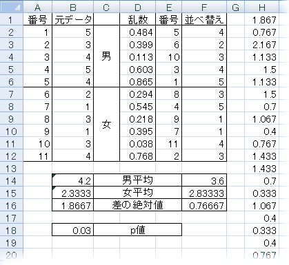

ホーム >
統計・データ解析 >
Excelによるリサンプリング
はじめに
このページは Derek Christie, ``Resampling with Excel'',
Teaching Statistics , Vol. 26, No. 1, pp. 9-14 (2004)
に着想を得て書きました。
Excelによる並べ替え検定

アンケートをしました。結果は「そう思わない」から「そう思う」まで1〜5の5段階で答えてもらいました。男子は5人で
5, 3, 4, 5, 4
という回答，女子は6人で
2, 1, 3, 1, 3, 4
という回答でした。男子の平均（4.2）と女子の平均（2.3333）の違いは統計的に有意といえるでしょうか（これは説明のために作った例で，本当はこんなに少人数のアンケートはありえないでしょう）。
このようなとき，従来は t 検定を使いました。しかし，極端に小さい標本ですし，正規分布かどうかもわかりません。そこで，Wilcoxon-Mann-Whitney検定 ，Brunner-Munzel検定 といったノンパラメトリック検定が候補になるのですが，ここでは，数学的な準備がいらず，しかも正確な方法として，並べ替え検定を，Excelを使ってやってみましょう。
A2に1を入れ，A3に2を入れ，これら二つのセルを選択し，フィルダウン（フィルハンドルを持って下に引っ張る）して，11までの番号を入れます。
その右側に元データを入れます。
D2に =RAND() と入れ，D12までフィルダウンします。乱数が入ります。
E2に =RANK(D2,$D$2:$D$12) と入れ，フィルダウンします。乱数の順位が入ります。つまり，1〜11の数のランダムな並べ替えが入ります。
F2に =VLOOKUP(E2,$A$2:$B$12,2) を入れます。これは列Bの元データをランダムに並べ替えたものになります。
B14に =AVERAGE(B2:B6) を入れます。男子の平均になります。
B15に =AVERAGE(B7:B12) を入れます。女子の平均になります。
B16に =ABS(B14-B15) を入れます。平均の差の絶対値になります。
B14:B16をF14:F16にコピーします。ランダムに並べ替えたデータの男女別平均とその差の絶対値が入ります。
H1に =B16 と入れます。元データの男女差の絶対値です。
H2に =F16 と入れます。並べ替えたデータの男女差の絶対値です。
G2:H1000の2列999行（行の数はいくら多くてもかまいません）を選択し，Excel 2007ではデータ→What-If分析→データテーブル（古いExcelではデータ→データテーブル）で「データテーブル」の設定をします。「行の代入セル」は空欄のままにし，「列の代入セル」に未使用のセル（例：Z1）を指定します。こうすると，今まで指定したことを何度も再計算して，その結果を列Hに並べてくれます。
数式→計算方法の設定で，再計算の方法を「データテーブル以外自動」または「手動」に直しておくと，軽くなります。
B18に =COUNTIF(H:H,">="&H1)/COUNT(H:H) と入れます。これが「実際に得られた男女差以上に，ランダムに並べ替えたデータの男女差が大きくなる確率」（p値）になります。ファンクションキーF9を何回か押して再計算して，このp値がどれくらいの桁まで正確か調べます。
最後のステップでは，Christieの流儀に従えば =RANK(H1,H:H)/COUNT(H:H)
を入れることになりますが，これでは列Hにタイがたくさんある今回のような場合に正確な値が求められません。
ちなみに，この場合は 11 C5 = 462 通りしかありませんので，うまく全部を重複なく発生させれば，正確な p 値が求められます。Rでは次のようになるでしょうか。
> x = c(5,3,4,5,4)
> y = c(2,1,3,1,3,4)
> c1 = mean(x)
> c2 = 2*mean(c(x,y))-mean(x)
> a = combn(c(x,y),5,mean)
> mean(a >= c1 | a <= c2)
[1] 0.02813853
Excelによるブートストラップ
上と同様にできます。やってみてください。Christieの論文にも例が載っています。
奥村晴彦
Last modified: 2019-01-09 10:29:44